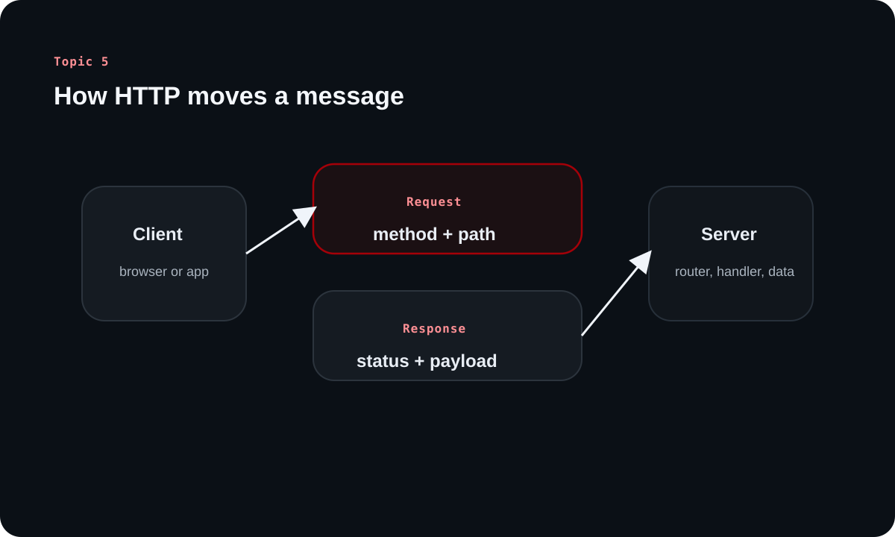

Topic 5 is where the backend map touches the wire. This article keeps the focus on the pieces backend engineers actually reason about every day: requests, responses, methods, headers, browser rules, and the transport assumptions underneath them.
The source treats HTTP as the default language between clients and servers on the web. If you understand how HTTP messages are shaped and interpreted, many backend decisions suddenly become easier to reason about.
Chapter 1
HTTP begins with a simple contract
The source starts with HTTP as the dominant client-server protocol for backend work on the web.
The protocol that carries most web application traffic
HTTP is introduced as the primary communication medium between browsers or apps and the backend systems that serve them. Even though many protocols exist, HTTP remains the one most backend engineers encounter first and most often.
Its job is straightforward: let a client send a request to a server and receive a response back. Nearly every web API, browser interaction, and application integration rests on that contract.
Statelessness is the first big mental model
The note emphasizes that HTTP is stateless. Every request must carry the information needed to be processed on its own, and the server does not automatically remember what happened before.
This is why authenticated APIs still need cookies, sessions, or tokens on later requests. Statelessness simplifies backend design, makes horizontal scaling easier, and keeps failures more isolated, but it also means continuity must be designed explicitly.
Simplicity: the server does not keep implicit conversation state.
Scalability: requests can be handled by any suitable server instance.
Fault tolerance: one crashed server does not erase client-side continuity by itself.
Chapter 2
HTTP sits on top of transport and version choices
The note briefly steps below the application layer so beginners can see what HTTP relies on without getting lost in network engineering details.
Client-initiated communication
HTTP follows the client-server model. The client initiates the interaction, the server waits for requests, then responds with a representation such as HTML, JSON, plain text, or an error code.
That flow stays conceptually the same whether the transport is plain HTTP or HTTPS. HTTPS adds encryption and trust establishment, but it does not change the fundamental request-response mental model.
Reliable delivery and evolving protocol versions
The source links HTTP to reliable transport, usually TCP, and positions HTTP itself at the application layer of the OSI model. For most backend work, the practical takeaway is that messages arrive through a lower-level channel designed for dependable transfer.
It also walks through the evolution from HTTP/1.0 to HTTP/3, showing how connection reuse, multiplexing, header compression, and QUIC improved performance over time.
Learning diagram

The HTTP cycle is easier to reason about when you separate the request message, the server-side work, and the response message that comes back.
Version
Key feature
Why it mattered
HTTP/1.0
New connection per request
Simple, but connection setup overhead was high.
HTTP/1.1
Persistent connections
Reduced repeated handshakes and improved efficiency.
HTTP/2
Multiplexing and header compression
Lower latency and better connection utilization.
HTTP/3
QUIC over UDP
Faster setup and better behavior under packet loss.
Chapter 3
Requests and responses are structured messages
The source then breaks HTTP into its message anatomy so the protocol feels concrete rather than abstract.
What lives inside a request and a response
An HTTP request contains a method, a target URL or path, a protocol version, headers, and optionally a body. A response echoes the version, includes a status code, adds its own headers, and may send back a body.
This message-level view is important because backend work often means inspecting, shaping, or validating each of these parts independently.
Headers are metadata with real operational power
The note frames headers as key-value metadata that describe the message without putting everything into the body or URL. They influence caching, authentication, content negotiation, transport behavior, and browser security.
Thinking of them as labels on a parcel is useful: they tell systems how to route, interpret, or safely handle the message before the payload is even opened.
Header family
What it describes
Examples
Request headers
Client preferences or credentials
Authorization, Accept, User-Agent
General headers
Message-level metadata
Date, Cache-Control, Connection
Representation headers
Body format and encoding
Content-Type, Content-Length, ETag
Security headers
Browser security behavior
HSTS, CSP, X-Frame-Options
Chapter 4
Methods express intent, and idempotency shapes retries
HTTP methods are not just verbs. They communicate what the client is trying to do and what retry behavior is safe.
Methods encode the operation
The source lists the common methods and ties them to practical intent: GET reads, POST creates, PUT replaces, PATCH partially updates, DELETE removes, and OPTIONS is often used during CORS preflight checks.
This matters because routers, caches, browser tooling, and backend conventions often interpret the same path very differently depending on the method paired with it.
Method
Typical meaning
Idempotent?
GET
Read a representation
Yes
POST
Create or trigger processing
Usually no
PUT
Replace a resource representation
Yes
PATCH
Partially update a resource
Often, but not guaranteed
DELETE
Remove a resource
Yes
OPTIONS
Ask what is allowed
Yes
Clarified note
PATCH is often treated as idempotent in learning material, but the real answer depends on how the patch operation is defined by the API.
Chapter 5
Browsers add their own rules through CORS
The protocol itself is one thing; browser security policy is another. The source uses CORS to show that difference clearly.
Same-origin policy and preflight requests
Browsers restrict which origins a front-end can talk to by default. CORS is the opt-in mechanism that lets a server say which origins, methods, and headers are permitted.
Simple requests can go through directly, while more complex requests trigger a preflight OPTIONS request first. That preflight asks the server for permission before the browser sends the real request.
Status codes make the response meaningful
The note groups response codes by family so they are easier to interpret. Success, redirects, client errors, and server errors are not just numbers; they are control signals that guide browser behavior, client retries, and developer debugging.
For backend engineers, good status code choices are part of API design because they communicate both outcome and responsibility.
2xx means the request succeeded.
3xx means the client is being redirected or can reuse cached content.
4xx means the request was wrong or unauthorized from the client's side.
5xx means the server failed while trying to process a valid request.
Chapter 6
Performance and security live in the same conversation
The source closes by connecting HTTP to practical backend concerns like caching, compression, persistent connections, and HTTPS.
HTTP can save work, time, and bandwidth
Caching lets clients and intermediaries reuse responses when appropriate, while headers such as ETag and Cache-Control help coordinate freshness. Compression reduces payload size, and persistent connections lower repeated connection setup costs.
These features are not special add-ons. They are part of why understanding HTTP deeply improves backend performance decisions.
HTTPS preserves HTTP while adding trust
HTTPS keeps the HTTP model intact but adds encryption and certificate-based trust. That matters because backend systems often carry credentials, personal data, and session material that should never travel in clear text.
In practice, a beginner should think of HTTPS as the secure operational form of HTTP on the modern web, not as a totally different protocol to relearn from zero.
Overall takeaway
What to remember
HTTP is the language of web backends: stateless, message-based, client initiated, and shaped by methods, headers, and status codes. Once you understand the anatomy of a request and response, CORS, caching, and HTTPS all become easier to place in the larger backend picture.